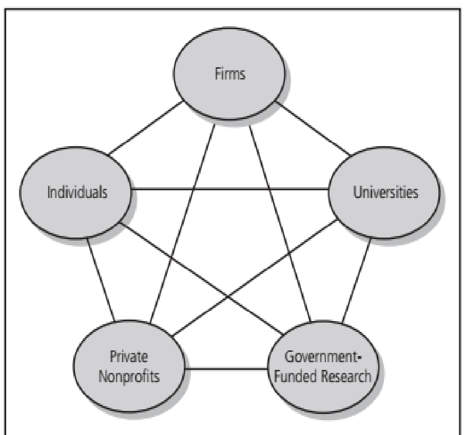
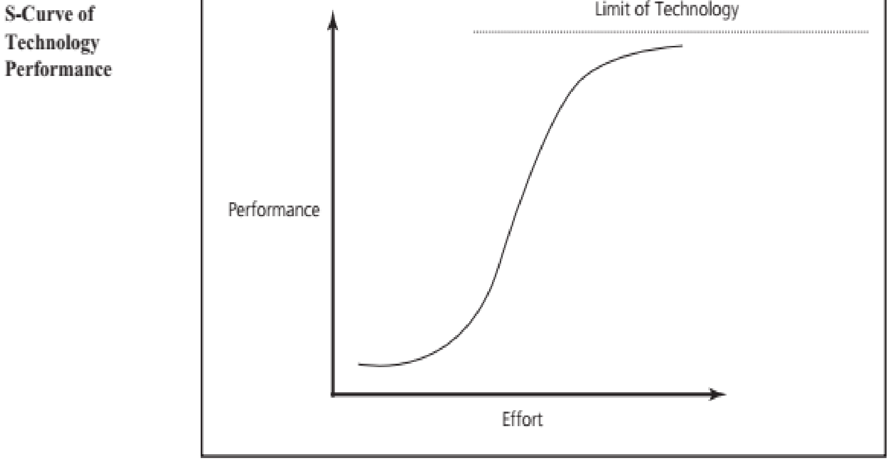
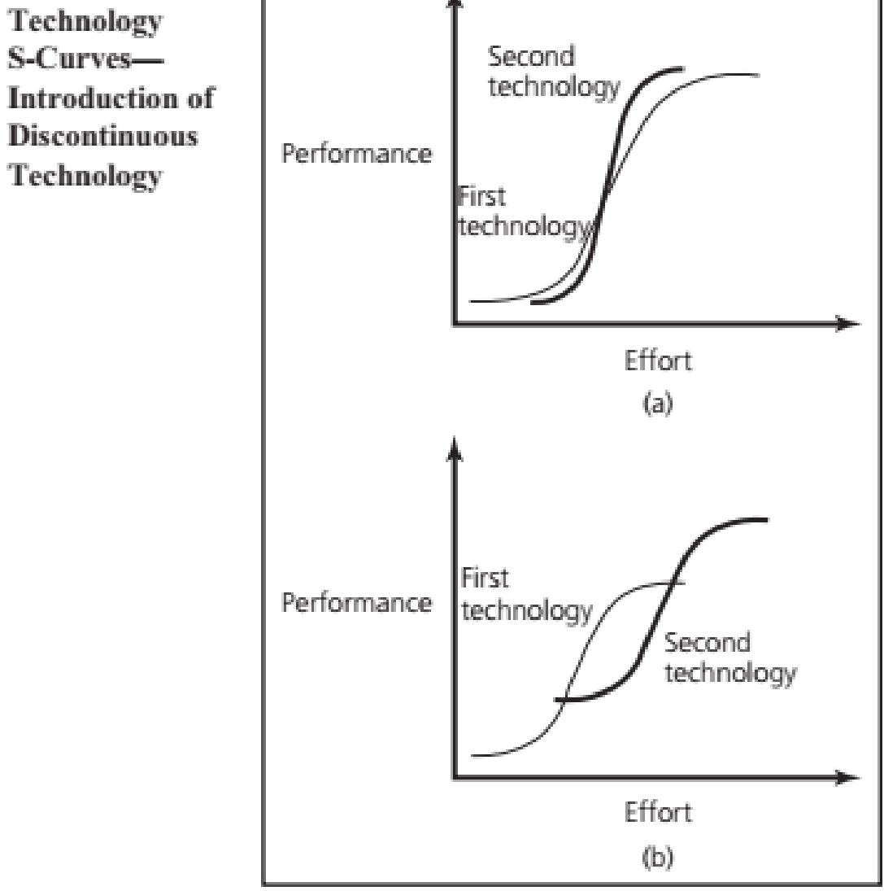
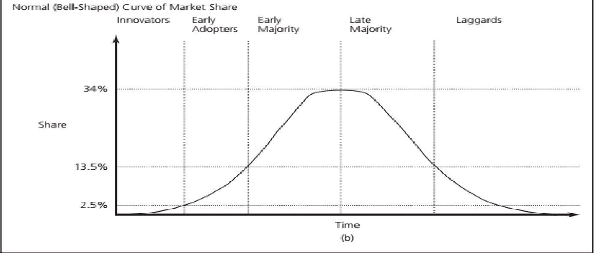

Entrepreneurship and Innovation
Sources of innovation and collaborative networks, types of innovation, technology S-curves and diffusion, dominant designs, learning effects and network externalities.
Central idea: innovation comes from individuals, firms, universities, government-funded research and private nonprofits, and above all from the linkages between them. Innovations are classified in pairs — product or process, radical or incremental, competence-enhancing or competence-destroying, architectural or component — and follow technology trajectories: an S-curve of performance against effort, discontinuous jumps to new technologies, and diffusion through innovators, early adopters, the early and late majority and laggards. Industries usually settle on a dominant design, selected by learning effects and network externalities, which can lead to winner-take-all markets.
The topic deals with formulating and implementing a technological innovation strategy in three parts [Slide 2]: the sources of innovation, the types and patterns of innovation, and standards battles and design dominance. Its two tables of Part I quote E. Roberts, "Benchmarking Global Strategic Management of Technology", Research Technology Management, March-April 2001.
Part I — Sources of innovation
§ 1 Where innovation comes from [Slides 3-4]
Innovation can arise from many sources: individuals (the lone inventor, or users who design solutions for their own needs), the research of universities, government laboratories and incubators, and private non-profit organizations. Firms have strong incentives to develop differentiating new products and services, which may give them an advantage over non-profit or government-funded entities [Slide 3].
The most important source of innovation is the linkages between these players. Networks of innovators that leverage knowledge and other resources from multiple sources are one of the most powerful agents of technological advance, so the sources of innovation form a complex system in which an innovation may emerge from one or more of its components or from the linkages between them [Slide 4].

§ 2 Individual and organizational creativity [Slide 5]
An individual's creative ability is a function of intellectual abilities, knowledge, style of thinking, personality, motivation and environment. The most important intellectual abilities are to look at problems in unconventional ways, to analyze which ideas are worth pursuing, and to articulate those ideas and convince others that they are worthwhile.
The creativity of an organization is a function of the creativity of its individuals and of the social processes and contextual factors that shape how they interact. It is not a simple aggregate of the individuals' creativity: the organization's structure, routines and incentives can thwart individual creativity or amplify it.
§ 3 Firms' sources of research and development [Slides 6-7]
Slide 6 reproduces the rank order of the sources of research and of development work reported by firms in 1999:
| Rank | Sources of research work | Sources of development work |
|---|---|---|
| 1 | central corporate research | internal R&D within divisions |
| 2 | internal R&D within divisions | central corporate research |
| 3 | sponsored university research | suppliers' technology |
| 4 | recruited students | joint ventures and alliances |
| 5 | continuing education | licensing |
| 6 | university liaison programs | customers' technology |
| 7 | consultants and contract R&D | continuing education |
| 8 | joint ventures and alliances | acquisition of products |
Slide 7 gives the percentage of companies that report extensive collaboration with customers, suppliers and universities:
| Collaborates with | North America | Europe | Japan |
|---|---|---|---|
| Customers | 44% | 38% | 52% |
| Suppliers | 45% | 45% | 41% |
| Universities | 34% | 32% | 34% |
§ 4 Universities, governments and nonprofits [Slide 8]
- Universities: to increase the degree to which their research leads to commercial innovation, many universities have set up technology transfer offices.
- Government-funded research: governments invest in research through their own laboratories, science parks and incubators, and grants to other public or private research entities.
- Private non-profit organizations: some perform their own R&D, some fund the R&D of other organizations without doing it themselves, and some do both.
§ 5 Innovation in collaborative networks [Slide 9]
Collaborative research is especially important in high-technology sectors, where no single individual or organization is likely to have all the resources and capabilities needed to develop and implement a significant innovation.
- Technology clusters: regional clusters of firms connected to a common technology, which may have buyer, supplier and complementary relationships as well as research collaboration; geographical proximity seems to help the formation and activity of such networks (example: the semiconductor firms of Silicon Valley).
- Technological spillovers: a positive externality of R&D that results from the spread of knowledge across organizational or regional boundaries.
Part II — Types and patterns of innovation
§ 6 Technology trajectories [Slide 10]
The path a technology follows through time is its technology trajectory, most often used to represent its rate of performance improvement or its rate of adoption in the market. Many factors influence these trajectories, but some patterns appear consistently across industries and periods.
§ 7 Four pairs of innovation types [Slides 11-13]
| Pair | Definitions |
|---|---|
| Product vs process [Slide 11] | product innovations are embodied in the outputs of an organization, its goods or services (e.g. a carmaker's new hybrid electric vehicle); process innovations change the way an organization conducts its business, such as the techniques of producing or marketing goods or services, often to improve the effectiveness or efficiency of production (fewer defects, more output in a given time) |
| Radical vs incremental [Slide 12] | a radical innovation is very new and different from prior solutions; an incremental innovation makes a relatively minor change to existing practices |
| Competence-enhancing vs competence-destroying [Slide 12] | an innovation that builds on (or renders obsolete) existing knowledge and skills; it depends on whose perspective is taken: the same innovation can enhance one firm's competences and destroy another's |
| Architectural vs component [Slide 13] | an architectural innovation changes the overall design of a system or the way its components interact; a component (modular) innovation changes one or more components without significantly affecting the overall configuration |
§ 8 The S-curve of technology performance [Slide 14]
Plotted against the effort invested, the performance of a technology follows an S-curve: it improves slowly at first, then quickly, and finally flattens as it approaches the limit of the technology.

§ 9 Discontinuous technologies and diffusion [Slides 15-16]
A discontinuous technology fulfils a similar market need by building on an entirely new knowledge base. The slide draws the S-curves of a first and a second technology: the second may start below the first and then overtake it [Slide 15].

Technology diffusion is the spread of a technology through a population [Slide 15]. Its adopters fall into five categories [Slide 16]:
| Category | Share | Profile |
|---|---|---|
| Innovators | 2.5% | risk-oriented, leading-edge individuals extremely interested in technological developments; a fraction of the population |
| Early adopters | 13.5% | larger but still small; risk-oriented and highly adaptable to new technology; tend to be young and well educated |
| Early majority | 34% | much larger and more careful; open to new ideas but wait to see how they are received before investing |
| Late majority | 34% | slightly conservative and risk-averse; need convincing before investing in something new |
| Laggards | 16% | extremely frugal, conservative and often technology-averse; invest only once an idea is extremely well established |

Part III — Standards battles and design dominance
§ 10 The dominant design [Slide 17]
The technology cycle almost always has a stage in which the industry selects a dominant design (Anderson and Tushman). Once it is selected, producers and customers focus on improving their efficiency in manufacturing, delivering, marketing or deploying that design instead of developing alternatives. A dominant design is a single product or process architecture that dominates a product category, usually 50% or more of the market; it is a de facto standard, a standard of the industry even if not officially enforced.
§ 11 Why dominant designs are selected [Slides 18-19]
Learning effects [Slide 18]: the more a technology is used, the more it is developed and the more effective and efficient it becomes. Adoption generates sales revenue that is reinvested in refining the technology, and firms accumulate experience that lets them use it more productively. Absorptive capacity is the ability of an organization to recognize, assimilate and use new knowledge.
Network externalities [Slide 19], or positive consumption externalities, occur when the value of a good to a user increases with the number of other users of the same or a similar good. They act through the installed base (the number of users of a good, e.g. the consoles of a video game system installed in homes) and the complementary goods (goods and services that enable or enhance its value, e.g. the games, peripherals and online services of that console).
The result: winner-take-all markets. These forces push the market towards natural monopolies: some alternative platforms survive in niche markets, but most of the market may be dominated by a single design or a few.